Обзор
В этом руководстве вы познакомитесь с процессом загрузки файла *.cga в CRYENGINE. Здесь рассматривается конвейер Maya, включающий базовый *.cga с одним файлом анимации *.anm, в котором хранятся данные анимации, вплоть до экспорта файла *.cga с несколькими файлами анимации *.anm.
В этом уроке вы заметите различия между экспортом *.cga из Maya и экспортом *.cga в 3dsMax. Например, в 3dsMax файл *.cga с одной анимацией не создает файл *.anm.
В этом руководстве может использоваться пример проекта GameSDK. Мы рекомендуем вам скачать это с База данных активов, импортируйте его в программу запуска, запустите оттуда, а затем создайте новый уровень.
См. эта страница чтобы узнать, как импортировать проект в программу запуска. (Папка по умолчанию для образца проекта GameSDK при загрузке: C:\Program Files (x86)\Crytek\CRYENGINE Launcher\Crytek\gamesdk_<XXX>\GameSDK)
Учебные файлы
Исходные сцены Maya ASCII с экспортированными файлами CRYENGINE:
YOUR_PROJECT_FOLDER\Assets.Правила для CGA и экспорта анимаций
- Анимации *.cga (*.anm) не поддерживают сжатие! Это означает, что вы получаете ключевые кадры для каждого кадра анимации, поэтому, например, 10-секундная анимация со скоростью 30 кадров в секунду приведет к созданию 300 ключевых кадров для каждого анимируемого канала и для каждого объекта.
- Несколько анимаций для одного и того же объекта необходимо сохранить и экспортировать в виде файлов *.anm. Однако вам не нужно следовать определенному правилу именования (как в 3dsMax), поскольку UI Экспортера в Maya обрабатывает именование за вас.
- Несколько анимаций для одного и того же объекта необходимо сохранить и экспортировать в виде файлов *.anm. Они должны следовать строгому соглашению об именах.
- Должен иметь префикс имени *.cga.
Правильно: хммвв_door_left_front_enter.анм
Неправильный: door_left_front_enter.anm
- Должен иметь префикс имени *.cga.
- первое подчеркивание в имени файла обозначает начало имени анимации в движке.
- Внутри Character Tool при предварительном просмотре анимации(й) *.cga отображается только имя анимации, а не все имя файла.
Рис1: Обратите внимание на разницу в имени файла между фактическим именем файла в файле *.pak и тем, что видно в Character Tool. 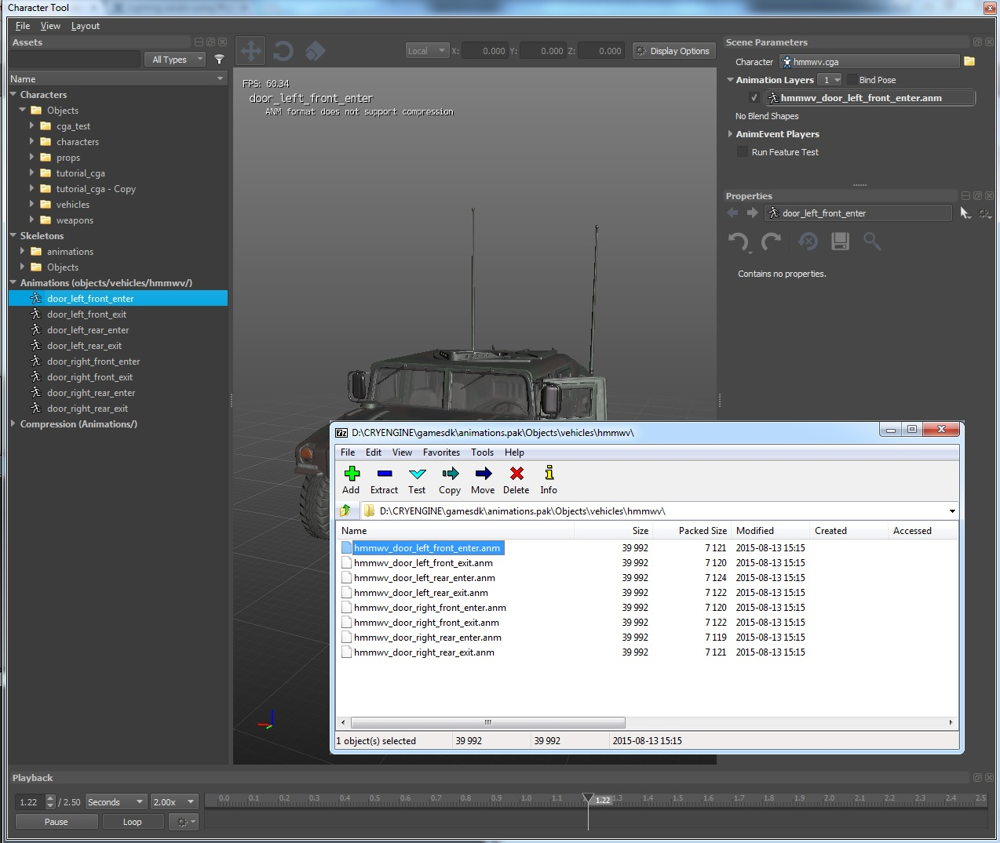
Не используйте имя "*_helper" ни для чего другого! Это ключевое слово для средства экспорта CRYENGINE Maya, который просматривает узлы нижней иерархии на предмет несколько детей трансформировать узлы из "*_helper" родительская группа!
Предварительные требования для этого урока
Прежде чем продолжить изучение этого руководства, убедитесь, что вы прочитали и поняли следующее:
Настройка одиночной анимации CGA
Настройте сцену Maya и сохраните ее, например, в соответствующем каталоге. YOUR_PROJECT_FOLDER\Assets\Objects\tutorial_cga. Убедитесь, что папка, содержащая сцену Maya и экспортированные файлы для CRYENGINE, является подпапкой папка вашего проекта.
Очень важно! Вы можете использовать подчеркивания в структуре папок и в имени файла анимации, однако экспортер работает таким образом, что ищет первую букву "_" в имени файла анимации. После этого все остальное считается именем анимации. Примеры имен файлов см. выше в разделе «Правила для CGA и экспорта анимации» вверху этой страницы.
Мы рекомендуем избегать использования более чем стандартного «одного подчеркивания» для имени узла «cryExportNode_*», например, допустимые имена *.cga должны выглядеть следующим образом: «cryExportNode_ball» или «cryExportNode_polySphere1».
Базовая настройка объекта/иерархия сцен Maya для экспорта CGA
В этом уроке в качестве контента мы будем использовать простой мяч. Правильно настройте объект с помощью материала, прокси-сервера коллизий, а также видимой сетки рендеринга.
NOTE: Этот процесс более сложен в Maya, чем в 3dsMax:
Создайте полисферу в «Перспективе» и переместите ее над землей. Откройте полку «Crytek» и щелкните значок «Инструменты». Это вызовет Плач Инструменты окно, где Создать CryExportNode Кнопка сценария запускается.
Если выбрана полисфера, будет создана типичная иерархия экспорта CRYENGINE.
Рис. 2: первоначальная настройка Maya 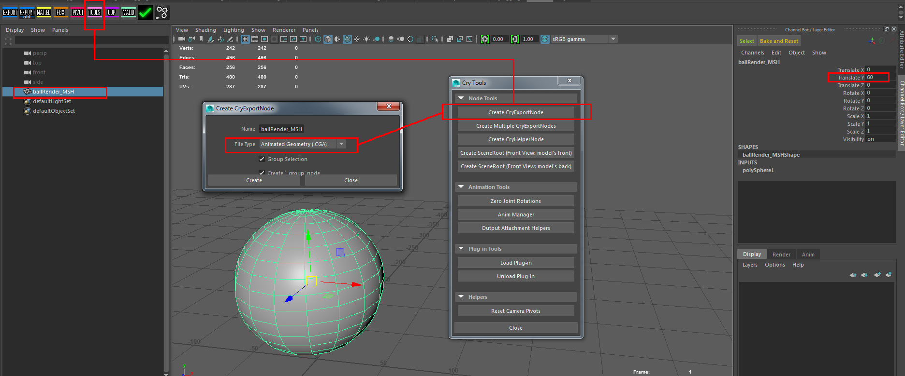
После создания иерархии экспорта результат отображается в Maya. Планировщик. Возможно, вы захотите переименовать геометрию полисферы в ballRender_MSH. Имейте в виду, что cryExportNode_ball и ballmesh_group узлы, показанные на снимке экрана ниже, отражают иерархию экспорта CRYENGINE и не должны изменяться.
NOTE: Будьте последовательны в своем соглашении об именах.
Рис.3: Экспорт иерархии без прокси физики/столкновений. 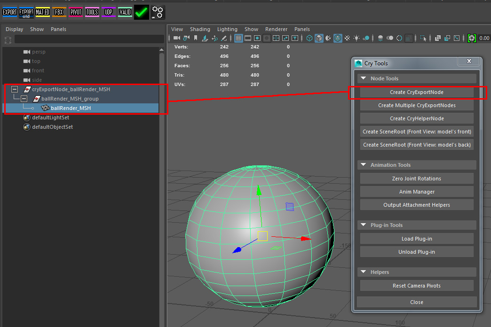
Между Maya и 3dsMax есть важная разница. сцены, созданные для экспорта *.cga. В случае Maya:
- Вы должны создать пустую группу с именем "*_helper" (замените звездочку * на любое имя).
- Поместите это "*_helper" группа под вашим узлом группы "cryExportNode_*" как ее прямой потомок.
- Потому что это "*_helper" действует как ROOT всей иерархии объектов *.cga, он не должен иметь никаких анимаций.
- Свяжите свои несколько узлов «*_group», которые вы создали вручную, с этим новым "*_helper" групповой узел.
- Свяжите части геометрии с соответствующими узлами «*_group».
- Не используйте файлы "*_group" с именем, подобным "*_helper", например "ball_helper" и "ball_group", это приведет к ошибке экспорта. Переименуйте узлы группы во что-нибудь вроде «ball_helper», «ballmesh_group» или «ballWhatever_group».
Рис.3a: Экспорт иерархии с дополнительной группой «*_helper», расположенной между группой «cryExportNode_*» и любыми узлами «*_group». 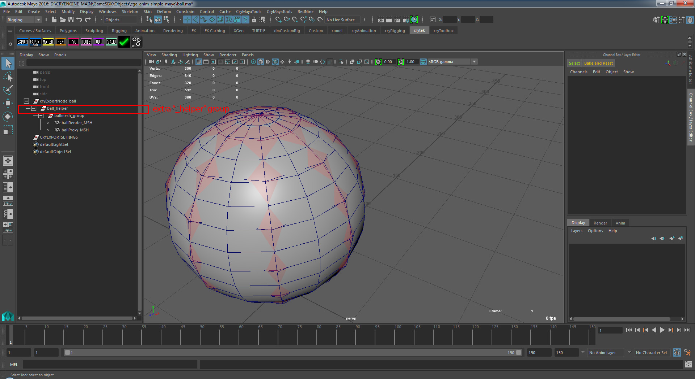
Чтобы создать прокси столкновений/физики, продублируйте полисферу и историю ввода. Уменьшите сложность прокси-сетки столкновений/физики. (Вы также можете добавить определяемое пользователем свойство (UDP) под названием «сфера», чтобы автоматически генерировать эффективную сетку столкновений CRYENGINE). Дайте этой сетке прокси коллизий собственное имя, например «ballProxy_MSH». Проверьте размер вашей сетки столкновений — она должна охватывать геометрию сетки рендеринга. Наконец, если хотите, увеличьте радиус узла входной истории.
Рис.4: Сетка столкновений/прокси поверх текущей сетки рендеринга. 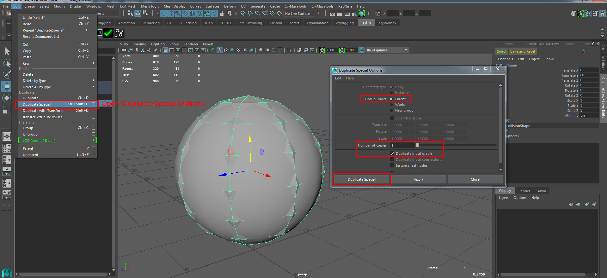
Поместите сетку коллизий/прокси под узлом "ballmesh_group" (порядок не имеет значения). CRYENGINE распознает сетку коллизий/прокси по назначению материала и узлу группы, под которым она находится.
Pic4a: Иерархия прокси-серверов коллизий 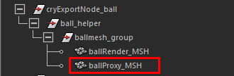
Настройка материала
Для экспорта из Maya в CRYENGINE необходимы материалы.
Создайте два шейдера «Blinn» — первый с именем «proxy_SUB». второй "render_SUB". Назначьте «render_SUB» сетке рендеринга и объекту «ballRender_MSH». «proxy_SUB» должен быть назначен объекту коллизии/прокси-сетки. Для лучшей визуальной обратной связи внутри Maya мы добавили некоторую прозрачность в прокси-шейдер и установили красный цвет рассеяния (см. снимок экрана ниже).
Рис. 5. Создайте два шейдера Maya перед добавлением в редактор группы материалов CRYENGINE. 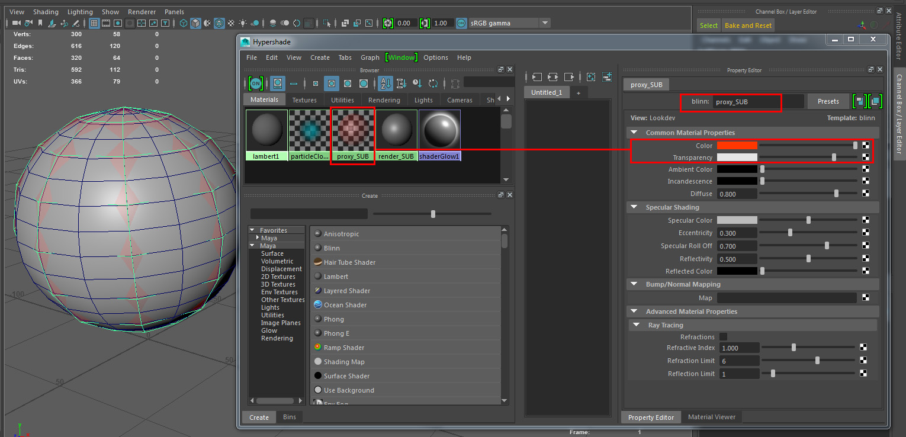
Два шейдера Maya необходимо добавить в новую «Группу материалов» экспортера CRYENGINE Maya:
Подойдите к полке «Crytek» и нажмите кнопку полки «MAT.ED». Откроется окно CRYENGINE «Группы материалов», и именно здесь будет создана группа материалов, мы назвали ее «ballMAT». (См. Рис.6):
Рис6: Создайте новую «Группу материалов». 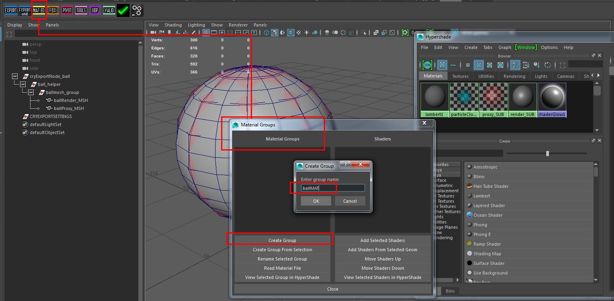
Затем добавьте два блинн-шейдера в новую группу материалов «ballMAT».
NOTE: Рекомендуется зарезервировать слот №. 1 из любой «Группы материалов» для физического/прокси-шейдера CRYENGINE.
Рис.7: Добавьте шейдеры Maya в группу материалов CRYENGINE. 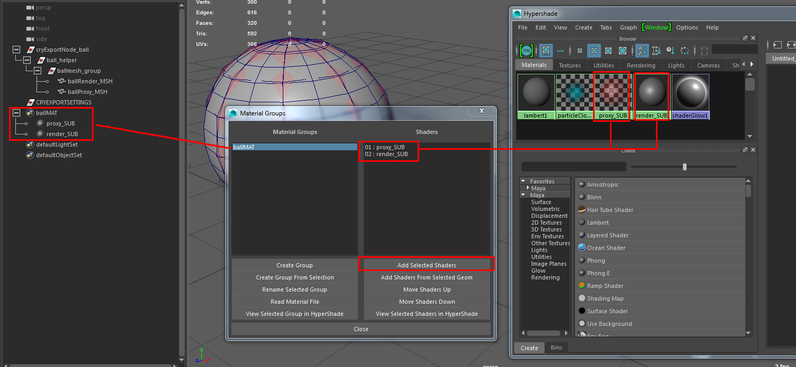
Физическая реализация шейдеров Maya, используемых для сеток столкновений/прокси
Прежде чем ваша сетка столкновений будет определена как сетка столкновений CRYENGINE, в шейдер необходимо добавить дополнительный атрибут «physicalise»:
- Откройте Крайтек полка и нажмите на Экспорт кнопка полки.
- Выберите proxy_SUB в Maya Планировщик.
В Крайтек Экспорт окно есть Добавить атрибуты кнопка. С proxy_SUB выбран шейдер (или объект(ы) коллизионной сетки), нажмите на значок Добавить атрибуты кнопка.
NOTE: При нажатии этой кнопки обратной связи не будет!
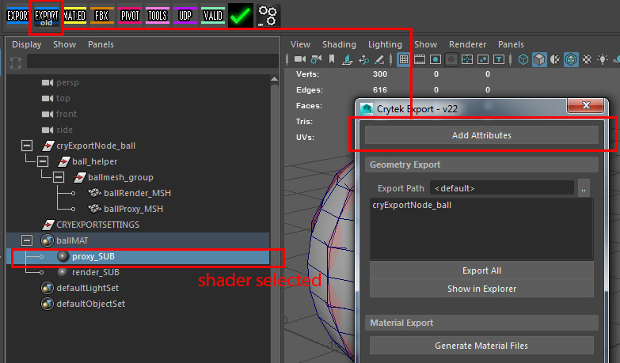
Рис.8: Добавьте дополнительный атрибут «Физикализ» в прокси-шейдер.
Для того, чтобы убедиться, что физикализировать Атрибут добавлен к выбранному прокси-шейдеру, откройте файл Maya Редактор атрибутов (CTRL-А). Под proxy_SUB вкладка перейти к Дополнительные атрибуты разверните и откройте его. Физическая реализация: нет атрибут будет активирован - измените его значение с Нет чтобы ProxyNoDraw (см. Рис9 ниже). 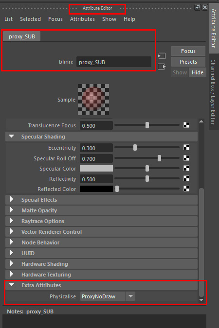
Рис.9: Проверьте добавленный дополнительный атрибут «Physicalise: ProxyNoDraw»!
Пока нет большой разницы между экспортом в файл CRYENGINE *.cgf и файл *.cga в Maya.
Добавьте простую анимацию CGA
Для этого урока мы сделали один простую анимацию, назовите анимацию «По умолчанию» и экспортируйте ее в файл CRYENGINE *.cga.
Просмотрите страницы документации/справки Autodesk Maya, чтобы узнать о настройке ключевых кадров и создании простой анимации. Эта информация не рассматривается в этом уроке — мы просто показываем результаты.
Итак, мы хотим добавить простую анимацию, которая перемещается вверх/вниз и вращается. *_group узел, т.е. в нашем случае ballmesh_group:
- Возьмите ballmesh_group и ключевые кадры некоторые перевод и вращение анимация к нему.
- Избегайте ввода ballRender_MSH или ballProxy_MSH узлы! Эти анимации не будут экспортированы.
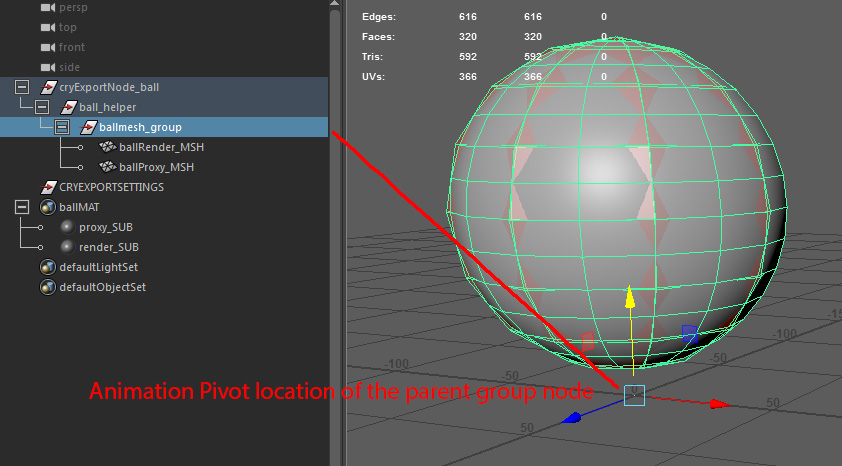
Рис.10: Анимируйте только узел преобразования «группа»! Обратите внимание на то, где находится центр узла группы — любые дочерние объекты сетки будут анимированы вокруг него!
Мы анимируем только групповой узел объектов сетки (рендеринга). Это связано с тем, что средство экспорта CRYENGINE для Maya извлекает образцы данных анимации только из *_group узлах и не производит выборку каких-либо данных анимации за пределами узлов сетки.
Вы всегда должны создавать родительскую группу для каждого фрагмента геометрии, которому требуется независимая анимация. Возможно, вы заметили другое расположение оси *_group узел и объект рендеринга + прокси-объект физики!
Экспорт
Добавьте анимацию в Anim Manager
Откройте Крайтек Экспорт Инструмент из вашего Крайтек полка. Перейдите в среднюю часть и нажмите на значок Аним-менеджер кнопка. Добавьте новую анимацию для экспорта и установите параметры, как показано ниже в Рис11:
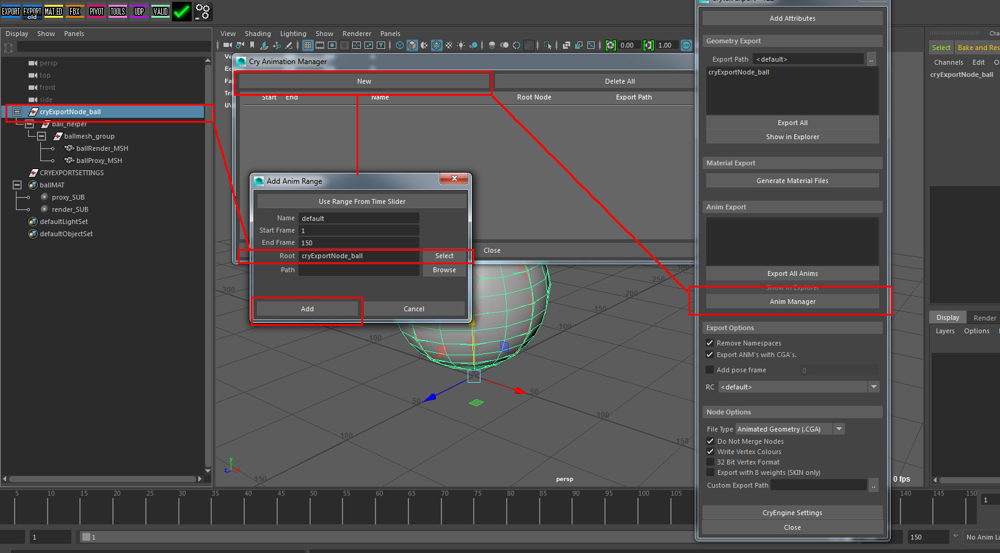
Рис.11: Добавьте анимацию по умолчанию для экспорта.
Ниже вы видите настройки перед экспортом анимации *.cga в Крайтек Экспорт. Обязательно активируйте Экспорт файлов *.anm с файлами *.cga!
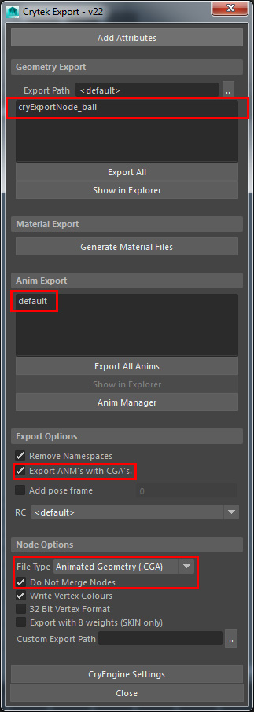 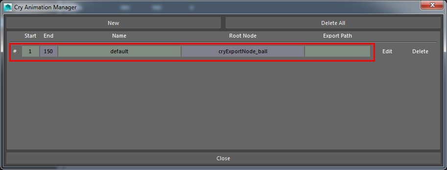
Рис. 12 и 13: Последние настройки, которые необходимо проверить перед экспортом.
Когда будете готовы, нажмите кнопку Экспортировать все/выбранное кнопка. Следующие шаги будут включать добавление этого файла *.cga/*.anm в качестве AnimObject объект в редакторе CRYENGINE Sandbox и создаём Flow Graph для воспроизведения По умолчанию анимация.
Проверка объекта в редакторе
Откройте свой уровень или создайте новый.
В Создание объектов панель, нажмите кнопку Сущность кнопку, а затем разверните Физика вариант. Выберите AnimObject и перетащите его в область просмотра. По умолчанию ему назначается модель ветроуказателя.
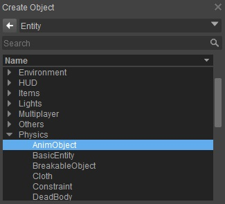
Рисунок 14a: Добавление AnimObject на уровень.
Чтобы изменить модель на только что созданный объект, перейдите в Свойства сущности меню. Одним из доступных вариантов является поле под названием Модель. Здесь вы можете нажать, чтобы перейти к папке, в которой вы сохранили новый *.cga (и выбрать его).
NOTE: Далее вниз по дереву свойств под Анимация меню - это Анимация опция, для которой задана анимация «по умолчанию».
Возможно, модель ветроуказателя на вашем уровне трепещет, и если это так, то это потому, что она воспроизводит анимацию по умолчанию. Как только вы замените исходную модель сущности на новую, она должна автоматически воспроизвести цикл прыгающего мяча.
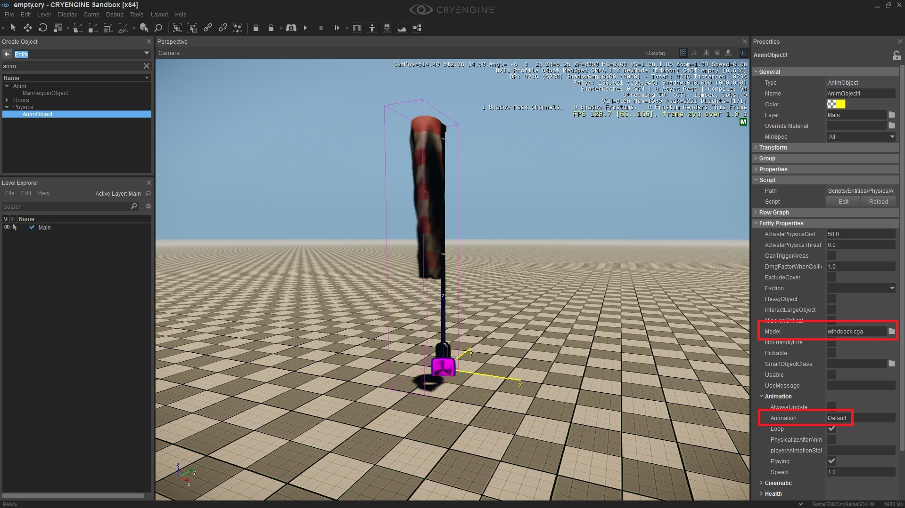
Pic14b: AnimObjects — путь модели и анимации.
Окончательные результаты

Pic14c: AnimObject с использованием только что экспортированного файла *.cga.
Как вы можете видеть на скриншоте выше, у нас есть сущность AnimObject, использующая экспортированный *.cga. На снимке экрана также выделен путь модели, который ссылается на ваш объект (objects/tutorial_cga/tutorialcga.cga). Петля и Играя также отмечены галочкой — это дает вам мгновенную обратную связь при воспроизведении анимации.
NOTE: Скорость воспроизведения может быть установлена на другое значение.
Скорость воспроизведения, равная 1, — это точная скорость анимации, настроенная в сцене Maya. Скорость воспроизведения 0,5 будет воспроизводиться на скорости 1/2, а скорость воспроизведения 2 — на удвоенной скорости.
На скриншоте выше выделена ограничивающая рамка. Это показывает положение объекта по умолчанию. Однако, поскольку объект в настоящее время находится на половине пути анимации, он отображается за пределами ограничивающей рамки.
Flow Graph
Иногда наличие объекта, зацикливающего анимацию в начале, — это не то поведение, которое вам нужно. Возможно, вы хотите, чтобы анимация запускалась только при возникновении определенного события. В таких ситуациях для управления этим типом взаимодействия используется инструмент «Flow Graph».
Подготовка: В Создать объект панель, нажмите кнопкуСущность кнопку, разверните Физика вариант, а затем double нажмите на значок AnimObject опция меню. В Свойства сущности, под Анимация меню, снимите галочку Играя флажок.
Если вы хотите, чтобы ваша анимация была «однократной», вам также следует снять флажок Петля флажок. Однако в нашем примере после запуска мы хотим, чтобы он воспроизводился непрерывно.
Что касается следующей части этого руководства, предполагается, что у вас есть некоторые базовые знания Flow Graph инструмент и может добавлять объекты и связывать их вместе.
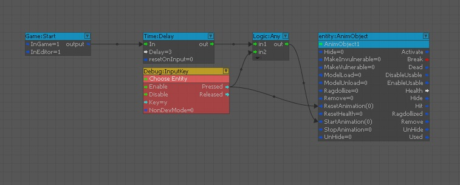
Pic14d: Flow Graph используется для запуска анимации на AnimObject.
- Создайте Flow Graph либо непосредственно на Сущность или на другом объекте. (Неважно, где вы его храните).
- Имея AnimObject выбрано, щелкните правой кнопкой мыши внутри Flow Graph и Добавить выбранный объект.
- Добавьте 3 предыдущих узла (Игра:Начать, Время:Задержка, Логика:Любая) и соедините их, как показано выше.
- Наконец, добавьте Отладка: InputKey и назначить ему ключ. Это сделано для того, чтобы вы могли сбросить и повторно запустить анимацию, когда захотите.
- Обратите внимание, как InputKey также проходит через Логика:Любая узел. Это связано с тем, что вам придется перезапустить анимацию при ее сбросе. В противном случае анимация будет сброшена, но не запустится снова.
Узел задержки (с 3-секундной задержкой) установлен таким образом, чтобы избежать срабатывания сразу после входа в игру. Это можно заменить на Триггер приближения или как только внутри игрового токена будет достигнуто определенное значение. То, как вы хотите, чтобы логика триггера работала, конечно, полностью зависит от вас (здесь мы использовали только один пример).
В следующем разделе мы будем экспортировать несколько анимаций *.cga, а также, в дополнение к стандартному файлу *.cga, несколько файлов *.anm. Все это достигается за один раз в Maya.
Настройка нескольких анимаций в одной CGA
До сих пор мы использовали только *.cga с анимацией по умолчанию. Иногда это все, что вам нужно — одна анимация на объекте. Однако с объектами *.cga вы можете пойти гораздо дальше. Например, автомобили, представленные в редакторе Sandbox, также являются объектами *.cga. Например, HMMWV имеет несколько анимаций открытия и закрытия дверей.
В Maya мы просто добавляем новые анимации, используя Аним-менеджер внутри Инструмент экспорта Crytek с полки. Это было показано в предыдущем разделе об экспорте одного файла *.cga. На скриншоте ниже показан результат перед нажатием кнопки Экспортировать все кнопка.
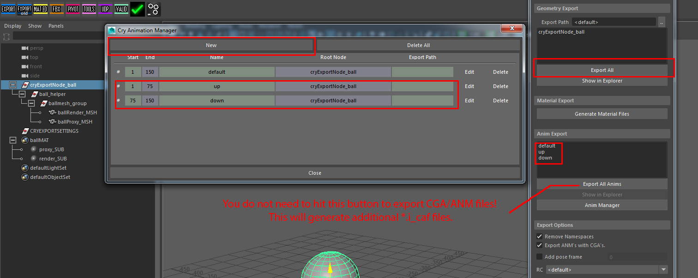
Рис. 15: Показан набор анимаций для экспорта.
Как можно видеть, экспортировать несколько файлов *.anm не так сложно, как в 3dsMax. Чтобы проверить, есть ли у вас все файлы, полученные в процессе экспорта, перейдите в папку, в которой вы сохранили исходный файл Maya, и проверьте наличие следующих файлов: файл *.cga для каждого cryExportNode_* узел группы и файл *.anm для каждой анимации, добавленной вами в Аним-менеджер.
Тестирование новых файлов ANM в Character Tool
На следующем снимке экрана показано Character Tool открыт, ресурс (*.cga) выбран и доступные анимации отображаются. 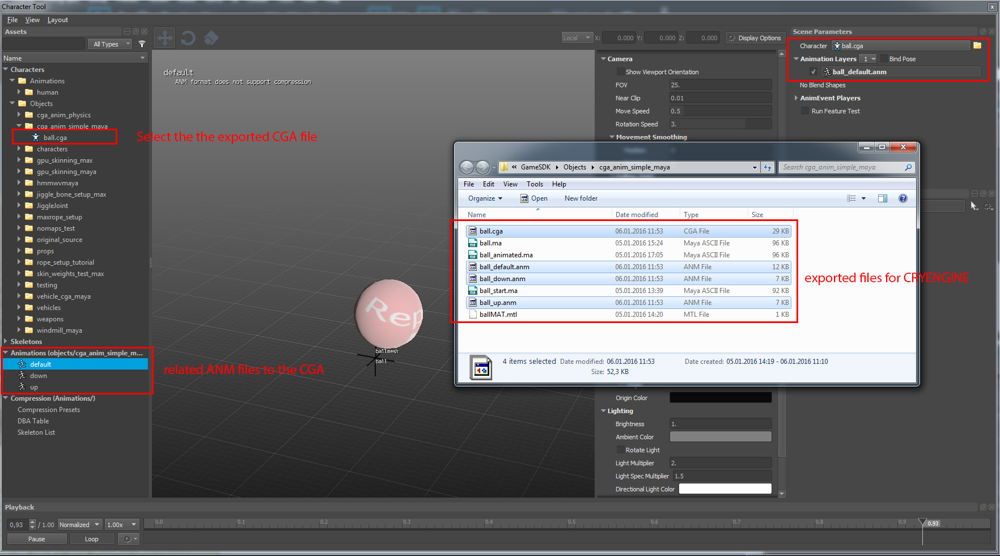
Рис. 16: «Character Tool», показывающий выбранный *.cga и созданные анимации, связанные с ним.